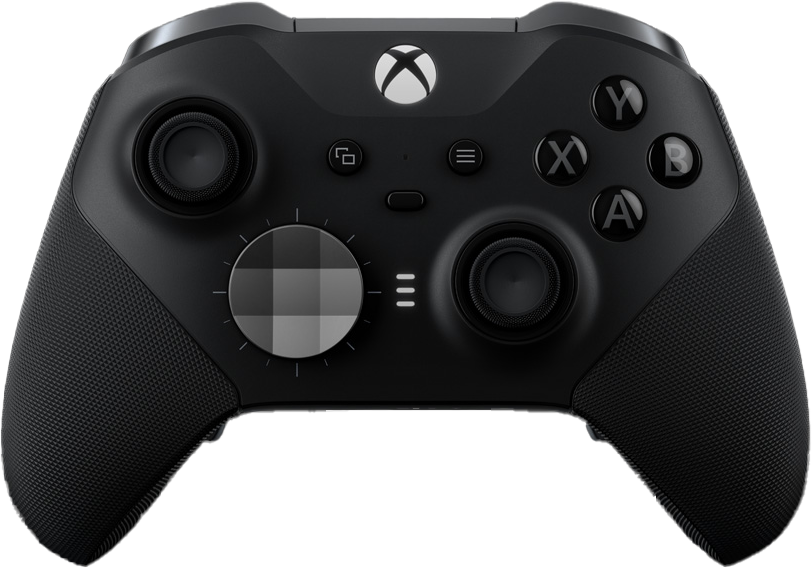
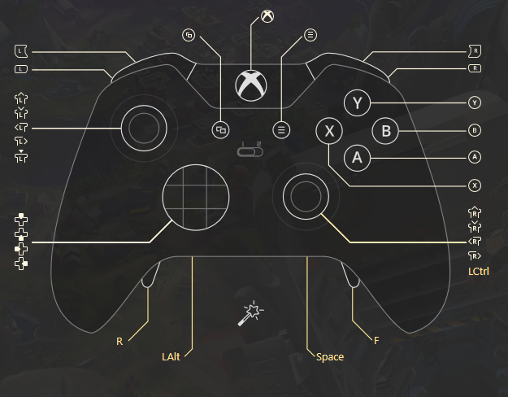
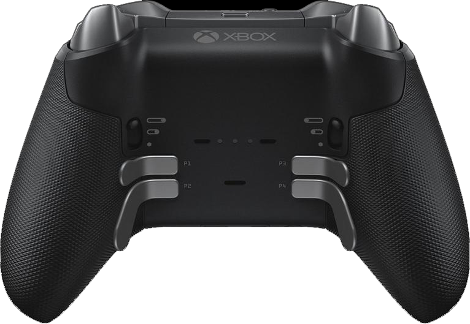

Refining the "Weapon-Throwing" Mechanic
The game featured a weapon-throwing mechanic that allowed melee weapons to be used as projectiles which introduced an exciting layer of strategy, but it also presented a challenge for fluidity in gameplay. Initially, the developers mapped the throw function to the thumbstick button—creating a conflict as players needed to aim and position their characters using the same control. This forced players to interrupt their aim to execute a throw, breaking the natural flow of combat. Recognizing this issue, I proposed a more intuitive solution: assigning the throw mechanic to a simultaneous press of both shoulder buttons. This allowed players to maintain precise control over their character’s aim with the thumbstick while seamlessly triggering a throw without interruption. By implementing this redundancy, the game preserved the fast-paced intensity of combat while enhancing the player experience. This solution, based on my feedback, was ultimately adopted in the final cut of the game, ensuring that gameplay mechanics were not compromised by hardware limitations.

Enhancing Control Customization with reWASD for PC Console Players
On the PC version of Chivalry 2, players enjoyed a significant advantage over console users due to the customizability of their controls, thanks to the flexibility of keyboard setups. However, the default controller settings on PC were still limited, with certain buttons forced to share multiple functions, reducing gameplay fluidity. To bridge this gap, I leveraged reWASD, a remapping software, to treat the controller as a keyboard, unlocking new possibilities for control customization. This allowed me to assign unique functions to each button, transforming the standard controller setup into one that rivaled the freedom and precision of keyboard controls. By also incorporating the paddles of the Xbox Elite Controller, I enhanced the overall experience, assigning secondary controls to the player’s pinky and ring fingers. This resulted in a smoother, more fluid combat system, where primary controls remained uninterrupted, enabling players to maintain the high-intensity action without sacrificing control or precision. Although this solution was achieved using third-party software, it significantly improved gameplay fluidity and balance for controller users on PC.
